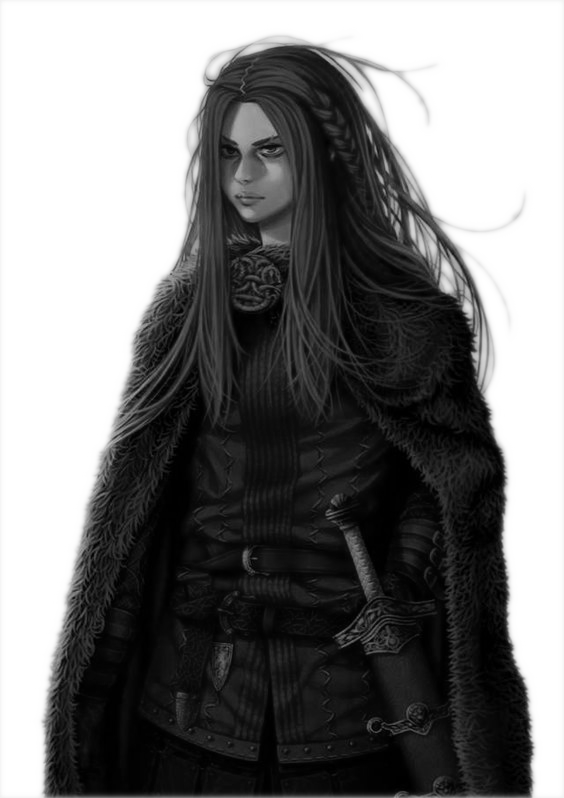

 Isa es una chica pelirroja de aspecto extraño. Su piel es de color "gris muerto" y sus ojeras cubren una gran parte de su rostro.
A pesar de su llamativa y demacrada apariencia, Isa se muestra de una forma bastante timida, siendo extremadamente tranquila en los momentos más complicados.
Al contrario de muchos de su época, Isa se divierte con cosas simples en la vida, como mirar el cielo, recolectar plantas y leer. Gran parte de su vida fue considerada como una buena estudiosa, su especialidad siendo su formación en artificier.
Se sabe que en cierto punto perdió la memoria así que no se conoce tanto sobre su pasado. Sin embargo, se mostró cooperativa en todo momento y desde que perdió la memoria el único recuerdo que tiene es su enorme ambición por destruir toda la magia oscura.